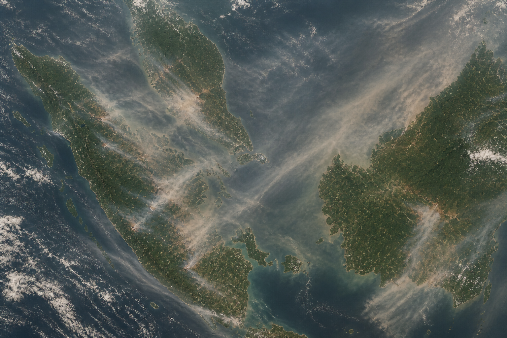

Field note 01Meteorological Service Singapore, NEA · Apr-Jul 2026
Satellite Fire Emissions & Haze Modelling
Analysed Himawari FRP, GFED, GFAS and MODIS land-cover datasets, building Python and QGIS workflows to support Southeast Asian haze monitoring and atmospheric dispersion modelling.